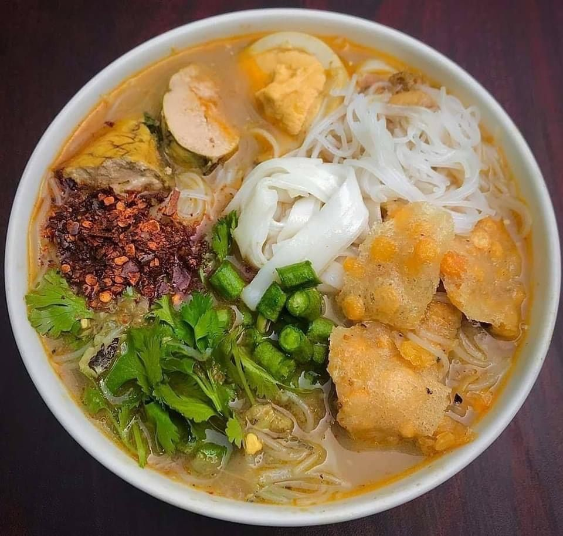

Home
Monhinga Recipe

Description
Mohinga is widely considered the unofficial national dish of Myanmar and
is an essential part of daily Burmese life. While traditionally enjoyed as
a hearty breakfast, it is also served at any time of the day and is a
staple at religious ceremonies, festivals, and social gatherings. The dish
consists of thin rice noodles smothered in a rich, aromatic fish broth
simmered with lemongrass, ginger, garlic, and shallots, thickened with
roasted rice powder and chickpea flour.
Although recipes vary slightly across different regions of Myanmar, the
essence of Mohinga lies in the delicate balance between savory fish
flavors and fragrant herbs. It is highly customizable at the table,
typically garnished with crispy fritters, boiled duck eggs, fresh
cilantro, sliced long beans, chili flakes, and a squeeze of fresh lime
juice, making it a beloved comfort food for people of all ages.
Ingredients
- Thin rice noodles (Mohinga noodles) – 1.5 kg (approx. 1 viss)
- Catfish or Rohu fish (cleaned) – 800 g (approx. 50 ticals)
- Lemongrass – 4 stalks (thinly sliced and pounded into a paste)
- Ginger – 1 thumb-sized piece (pounded into a paste)
- Garlic – 10 cloves (pounded into a paste)
-
Red onions / Shallots – 3 large onions (thinly sliced for frying) and 15
small whole shallots (peeled)
-
Banana stem – 1 tender core (thinly sliced into rounds and soaked in
turmeric water to prevent browning)
- Roasted chickpea flour – 5 tablespoons (dissolved in water)
- Roasted rice powder – 3 tablespoons (dissolved in water)
- Fish sauce – to taste
- Turmeric powder and paprika powder – 1 teaspoon each
- Black pepper powder – 1 teaspoon
- Cooking oil – 5 tablespoons
- Salt and seasoning powder – to taste
-
Toppings & Garnishes: Hard-boiled duck or chicken eggs, crispy lentil or
gourd fritters, fresh cilantro, thinly sliced long beans, lime wedges,
and roasted chili flakes
Steps
-
Boil and debone the fish: Clean the fish thoroughly and place it in a
pot with water, a pinch of turmeric, a splash of fish sauce, and a
couple of bruised lemongrass stalks. Boil until the fish is cooked
through. Remove the fish, let it cool, and carefully flake the meat away
from the bones. (Reserve the fish stock for the broth).
-
Sauté the aromatics: Heat cooking oil in a pan over medium heat. Add a
pinch of turmeric powder and paprika for color, then toss in the pounded
lemongrass, ginger, garlic, and thinly sliced onions. Sauté until
fragrant and golden brown.
-
Cook the fish paste: Add the flaked fish meat to the sautéed aromatics
along with a splash of fish sauce. Stir-fry until the fish is dry,
aromatic, and well-combined with the spices.
-
Prepare the broth base: Pour the reserved fish stock into a large soup
pot along with about 2 liters of water. Bring the liquid to a rolling
boil.
-
Thicken the soup: Once boiling, add the sautéed fish mixture into the
pot. Slowly pour in the dissolved chickpea flour and roasted rice powder
mixtures while stirring continuously to prevent lumps from forming at
the bottom.
-
Add vegetables and simmer: When the broth returns to a boil, add the
peeled whole shallots, drained banana stem slices, and peeled
hard-boiled eggs. Season with salt, fish sauce, seasoning powder, and
black pepper. Lower the heat and let it simmer gently until the banana
stems and shallots are tender.
-
Assemble and serve: Place a portion of rice noodles into a bowl and
ladle the hot, fragrant fish broth over them. Garnish with sliced boiled
eggs, crushed crispy fritters, cilantro, long beans, chili flakes, and a
squeeze of fresh lime before serving.